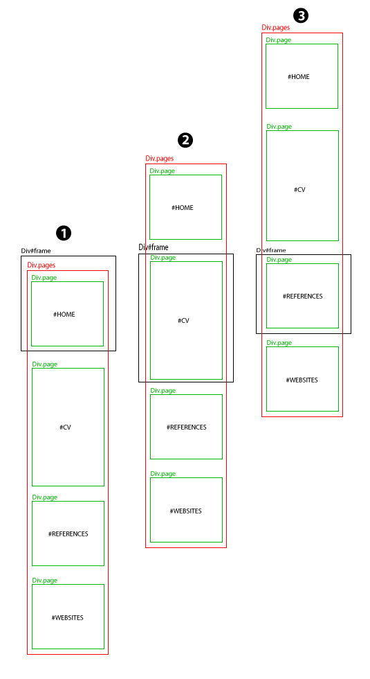
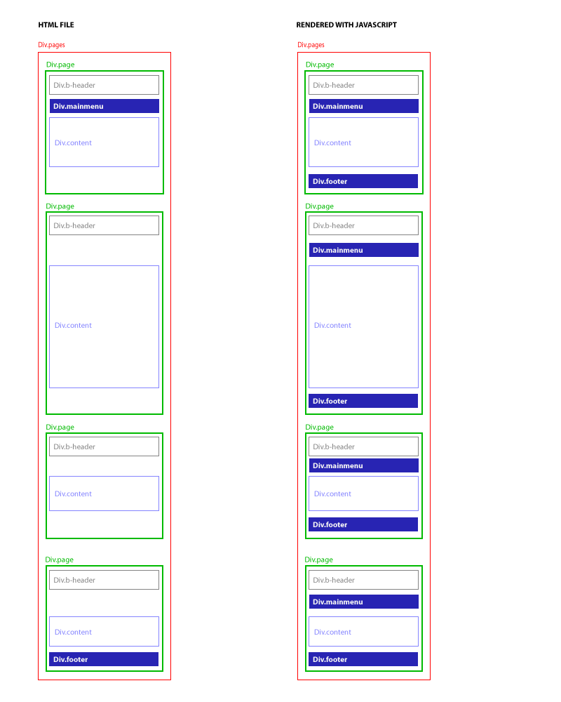
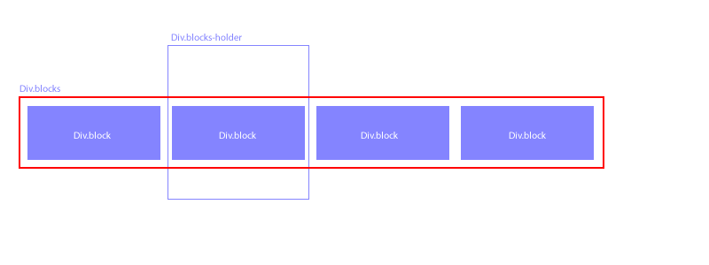
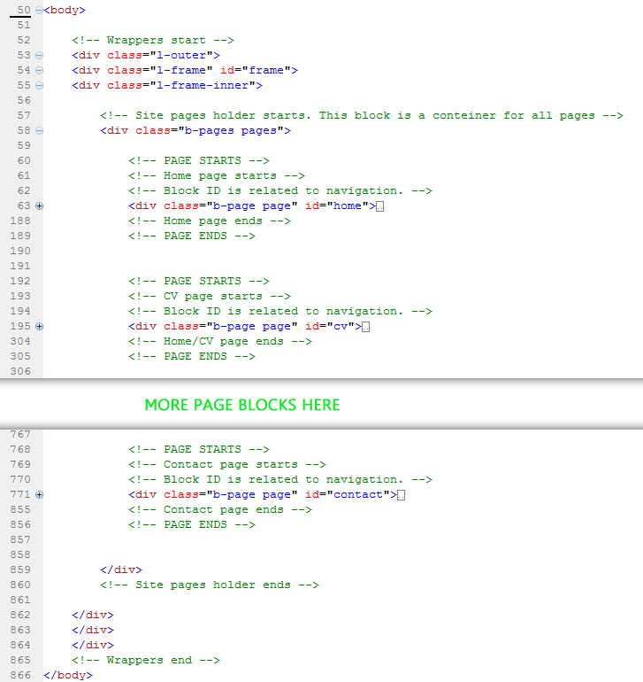
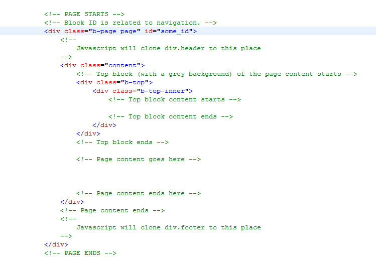
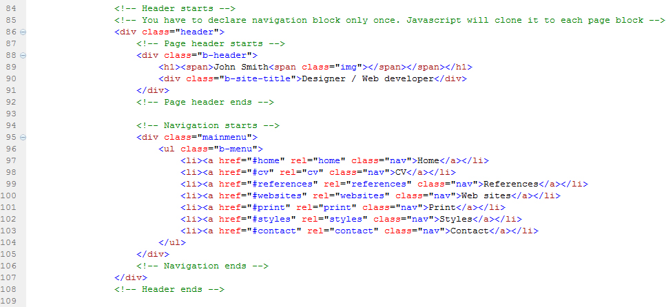
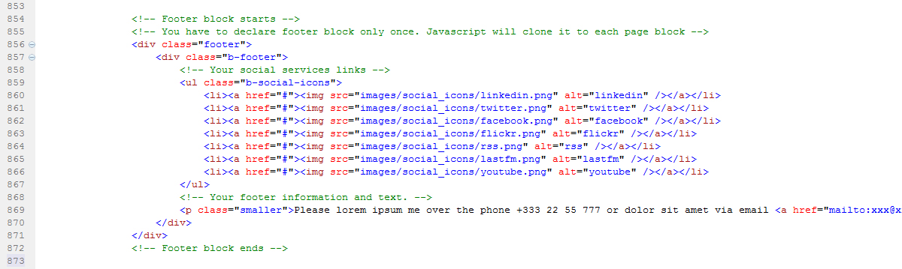
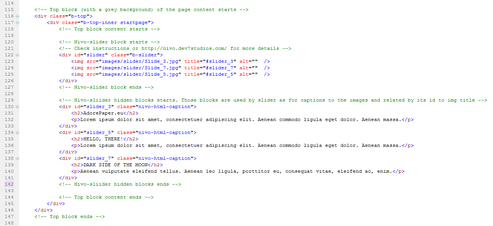
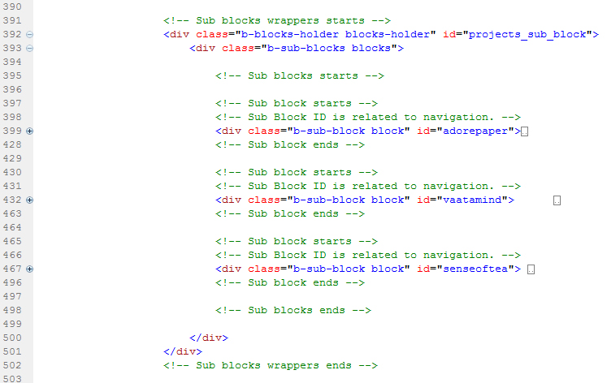
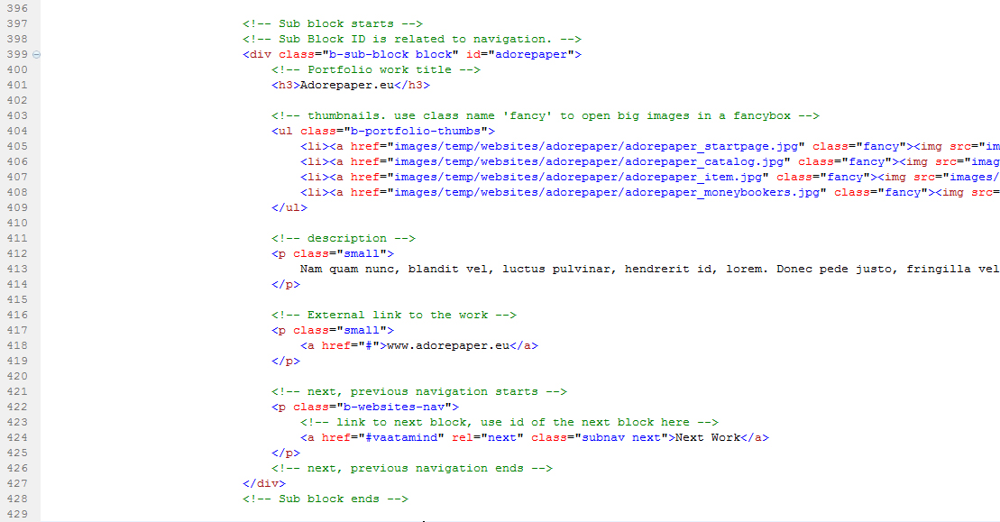

Created: 31/10/2010
By: Sergei Odincov
Email: sergei@odincov.net
Thank you for purchasing my website template. If you have any questions that are beyond the scope of this help file, please feel free to email via my user page contact form here. Thanks so much!
"John Smith" is a one-page CV/Portfolio website template. It's built to tell a story about a professional designer/web developer to a possible employer or a hirer. Smoothly navigating from section to section a visitor will get the full picture of you as of a professional.
Although "John Smith" is meant to be a one-page website template (and technically it's only one html file) the visitor will have several-page website experience but without any browser refreshment and with a smooth scroll-to effect for switching between sections. Instead of scrolling the window content "John Smith" template built to scroll particular Div content. This method allows to hide superfluous sections and show selected only. A special javascript function recalculates main Div height for each viewing page.
If you start studying html files you will see that the template has three wrappers. One of them with the id "frame" is your main frame. It contains a div with a class name "pages", which in it's turn is a container for all your pages.(Two others are for the layout positioning) There are also several div blocks with a class name "page" inside the container "pages". Each of them holds some particular page.
Look at this image below to get the idea:
When you are navigating to some page, div#frame is scrolled to the particular section of div.pages. After a new position of the frame is set, div#frame changes it's height to fit the content block. All other stuff is hidden as overflown.
Each div.page block must have unique ID and this is important for the navigation. Setting up any navigational link to the particular page you have to use this construction:
<a href=“#page_id” rel=“page_id” class=“nav”>Some page</a>
A javascript function uses "rel" value for the navigation. "Href" value is used only then javascript is turned off.
As you will see from the html file, each div.page block has div.content inside. But only the first one has div.header and only the last one has div.footer. There are two reasons for that. Firstly, if visitor's web browser doesn't support javascript, the page will still have the header, navigation and the footer in the right place (header and navigation at the top and footer at the bottom). Secondly, there is javascript to do all the dirty work for you. So, as soon as the document is loaded div.header will be cloned and inserted into each div.page right before div.content element, div.footer will be cloned and inserted in each div.page right after div.content.
The same scroll-to effect is used to view your portfolio's works. But here you scroll horizontal. Scheme below will help you to understand the structure.
Div.blocks-holder can be scrolled to any particular div.block. This construction could be placed inside any div.content. One div.content element can have only one div.blocks-holder.
Each div.block must have unique ID which is important for the navigation.
Link to the next block:
<a href=“#next_block_id” rel=“next” class=“subnav next”>Next</a>
Link to the previous block:
<a href=“#previous_block_id” rel=“prev” class=“subnav prev”>Previous</a>
Href attribute is used only when javascript support is turned off.
To navigate to particular sub block from some other page use this form of link:
<a href=“#block_id” rel=“page_id:block_id” class=“goto”>Sub block on some page</a>
It's very important to keep in mind that the navigation of the site is bind to javascript functions. Setting up the navigation links use one of the following class names: 'nav', 'goto' in general and 'prev', 'next' inside sub blocks. There are three different rules for using the links:
To navigate to any page from anywhere. 'Rel' element is related to the unique ID of the div.page element. This construction also used in the main navigation.
<a href=“#page_id” rel=“page_id” class=“nav”>Some page</a>
To navigate to some particular page and block from anywhere. 'Rel' element is related to page and block IDs. Those IDs should be separated by colon (page_id:block_id). This construction applyed to 'Show work' link of featured works on 'Home' page.
<a href=“#block_id” rel=“page_id:block_id” class=“goto”>Sub block on some page</a>
To navigate to next or previous div.block. Those are used only inside div.block element.
<a href=“#next_block_id” rel=“next” class=“subnav next”>Next</a> <a href=“#previous_block_id” rel=“prev” class=“subnav prev”>Previous</a>
The url address always relevant to the current position of the website content. It changes hash each time the website visitor clicks something and allowes to use the direct url address to show some particular page to somebody.
This website template (as you already know) is a one-page template which means that all content is in the only one html file. I have explained the layout structure already, here you can see the html code examples.
This is the layout in general.
There are div.pages inside main wrappers. This div contains blocks with a class name 'page'. These div blocks are the pages of your web site. Div.page blocks are placed one after another but only selected page will be seen to a website viewer. You can delete some of them, modify or add new.
Lets look closer to the page block. This structure below must be used for any page. Don't forget to add a unique ID for each block.
Place your content inside div.content block. Div.b-top is for the page title and for the short intro text (use 'H2' and 'P' elements). The rest of your content should be placed after div.b-top . Check 'Styles' page of the 'scrollable_full' example of the package to get the list of html elements that can be used for html markup. Remember that div.header and div.footer will be cloned right before and after div.content block.
Div.header is a container for the website header (div.b-header) and for the navigation (div.mainmenu). Div.b-header is a simple thing, change the name/logo to your own name here. The div.b-mainmenu is a bit more complicated. We bind navigation link to particular div.page by its ID to 'rel' attribute of the A element. In addition, we use 'href'. The 'href' attribute is used when the javascript support is switched off.
Div.header should be placed in the first div.page before div.content block. Javascript will clone it to all other div.page blocks in the same place, so you don't have to do that manually.
Div.footer should be placed in the last div.page after div.content block. The footer holds links of social services and some text paragraph with your contact and copyright information. Javascript will clone it to all other div.page blocks in the same place as well (no need to do that manually).
Nivo-slider is used on Home page of the website. This is just a div with images. Note that only images or images wrapped in links are allowed for the slider div. Any other HTML will break the slider.
To add a caption to an image you simply need to add a title attribute to the image. To add a HTML Caption simply set the title attribute to the ID of an element that contains your caption (prefixed with a hash). Note that the HTML element that contains your caption must have the CSS class nivo-html-caption applied and must be outside of the slider div.
More information about nivo-slider you will find following the link http://nivo.dev7studios.com/. If you are ok with javascript and jquery then you can modify the nivo-slider settings in js/script.js file starting from line 8.
You can see that something like a slider is used on Portfolio pages to show the works in a sequence. This is called 'sub blocks' here and it works much like the main navigation of the site. See more explanations here.
Div.blocks-holder is a 'frame' for div.blocks which in its turn is a container for all sub blocks (div.block). Each sub block must have its unique ID.
This is how the sub block should look like (example below). As you can see everything is simple. The work title, unordered list for thumbnails and a text with details. Remember to add a class name 'fancy' to the links for the bigger images to open them in a fancybox. Also, if you are familiar with javascript and jquery you can edit more fancybox settings in js/scripts.js file (starting from line 149).
Be careful with the navigation between the blocks. How to set up the links is described here. From the example you can see where to place them (p.b-websites-nav).
You will find four css files in 'css/lib' directory. As you can see from the names, they are for the 'reset', 'typography', 'fonts' and 'forms'. Also some css files are in 'css' directory. One of them is the 'style.css' which contains the general styling for the website. Others are 'nivo-slider.css', 'custom-nivo-slider.css', 'jquery.twitter.css' and 'print.css'. Css file for fancybox styling can be found in 'js/fancybox' directory.
The style.css and print.css are included in the 'head' of the html files using 'A' element. All other css files are included at the beginning of the style.css file by using @import method. Most important are the 'lib' files. All fonts, forms and typography styles are described there. Inclusion of them at the beginning of the style.css file gives us the ability to rewrite some of the attributes later.
This theme imports a lot of javascript files.
Two jquery plug-ins jquery.form and jquery.validate are used to set up the contact form. Jquery.form allows to use AJAX method for submitting the form. Jquery.validate validates the form before submitting.
After the form is submitted and all fields are filled correctly the sendmail.php will be executed. Your must set your email address on the second line of the file. This is a really simple php script. It just sends the mail using php mail() function.
I've included four psds with this template:
I've used the following images, icons and scripts as listed.
Once again, thank you so much for purchasing this theme. As I said at the beginning, I'd be glad to help you if you have any questions relating to this theme. No guarantees, but I'll do my best to assist. If you have a more general question relating to the themes on ThemeForest, you might consider visiting the forums and asking your question in the "Item Discussion" section.
Sergei Odincov